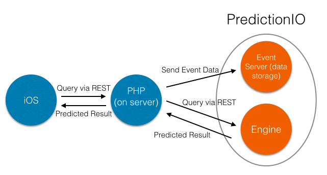

The iOS app consists of a login authentication system for mobile users. There are 3 methods that a user can login with:
The backend user database used for the mobile app is the same one created from the Django web app, using PostgreSQL.
When the user logs in to the app for the first time, they must enter their phone number, which is used to identify them. The phone number is verified by checking if it exists in the PostgreSQL user database. This is done by making use of the SwiftyJSON package available for iOS. The mobile app accesses a url from the web app, that is hidden, and uses the JSON data to verify the user logging in with the password.
Once the user has logged in, they will be asked whether they would like to use TouchID, if it is set up and available on their device. If the user has opted in, their fingerprint associated with the device will be verified.
The user will then be directed to the ‘Welcome’ screen if login has been successful. They will be asked whether they want to enable prediction login, and ‘Location Services’ which must be enabled in order for the prediction engine to be used.
The user will immediately be directed to the password screen (they no longer have to enter their phone number). The order of precedence of the 3 authentication processes will occur in the following order, if enabled:
If one authentication process is successful, the user will progress to the ‘Welcome’ screen. If not, the app will try the next authentication process in order, with the password login being the last resort.
The prediction login system will use the prediction engine that was created with PredictionIO. The HTTP networking library, Alamofire is used to call a GET request to PHP files that will return either a ‘1’ or ‘-1’, depending on the result of the prediction. The PHP files are currently on an IBM Bluemix server.
The GET request will also send over, from the iOS app to the PHP, data that is collected from the iOS app - time, day and location (longitude/latitude coordinates).
If the prediction result is ‘1’, the user will successfully login, and will be directed to the ‘Welcome’ screen. On the other hand, if the prediction result is ‘-1’, the next authentication process will be attempted.
In order for the prediction engine to collect login data, every time the user successfully logs in to the app (i.e. gets directed to the ‘Welcome’ screen), the event data is sent to an ‘Event Server’ that stores every instance of when the user has logged in.
The fingerprint login uses the ‘Local Authentication’ framework, to enable TouchID to be implemented into the app. It will check that the fingerprint of the person authenticating is the device owner.
Error checking has been implemented using LAContext, which is part of the ‘Local Authentication’ framework, if the fingerprint login fails for any reason. 5 specific contexts are evaluated:
To test the iOS app, manual testing was used, by executing the test cases as per the end user’s point of view. The iOS emulators were used to test the app during the early stages, but once more functionality was added, such as connection with the PostgreSQL database and sending in login data to the prediction engine, a real device was used to test the app, which also meant that any usability issues were brought up and fixed.
In order to make sure that all test cases were tested, we used the decision table below to cover all scenarios.
| Conditions (enabled) | TC1 | TC2 | TC3 | TC4 |
|---|---|---|---|---|
| Prediction Login | Y | Y | N | N |
| Fingerprint Login | Y | N | Y | N |
| Password Login | Y | Y | Y | Y |
| Actions (should occur) | ||||
| Try in order: Prediction Login, Fingerprint Login, Password Login | X | |||
| Try in order: Prediction Login, Password Login | X | |||
| Try in order: Fingerprint Login, Password Login | X | |||
| Password Login | X | |||
| Test Result | Pass | Pass | Pass | Pass |